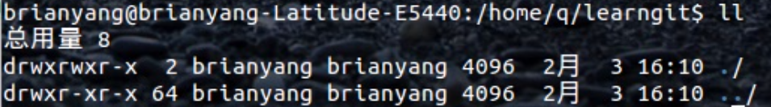
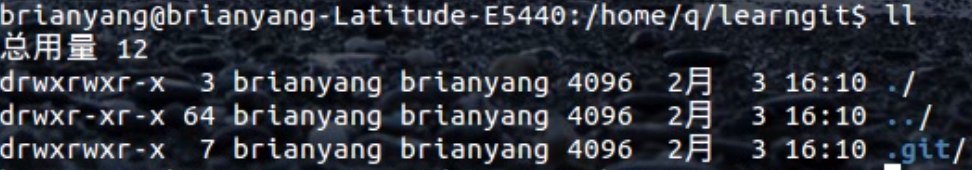

Git
A Distributed Revision Control System
杨阳
度假事业部搜索与频道
What is Version Control?

集中式版本控制

分布式版本控制

What is Git


Git VS SVN
Git保存的是快照，SVN保存的是文件的变化.
Git几乎所有的操作都可以在本地完成，SVN需要与服务器通讯以获得老版本的文件．
Git对文件内容使用SHA-1 hash生成提交版本号，可以保证文件内容的完整性，而SVN使用递增的编号作为版本号．
Git工作流
git的三种状态
| 已修改(modified) | → | 工作区 |
| ↓ | ↓ | |
| 已暂存(staged) | → | 暂存区 |
| ↓ | ↓ | |
| 已修改(modified) | → | 仓库 |
git的三个区域

分支开发

一般开发流程
创建仓库/从远程仓库复制
创建特性分支
创建/修改文件
工作区提交文件到暂存区
暂存区提交文件到本地仓库
切换到主分支
合并特性分支到主干分支
推送本地仓库到远程仓库
Git常用命令
| Basic | init | clone | status | log | reflog | remote | config |
| File | fetch | pull | add | commit | push | rm | stash |
| Branch | branch | checkout | merge | diff | reset | revert |
git init
创建一个空的本地仓库或者重新初始化一个已经存在的仓库Demo

↓ git init

git clone
克隆远程仓库到一个新的目录
Demo
git status
显示工作区域的状态
Demo
git log
记录提交日志
Demo
git reflog
记录所有分支的所有操作
Demo
git remote
管理相关的远程仓库
Demo
git config
修改Git配置文件
Demo
git fetch
拉取远程仓库到本地仓库
Demo
merge
合并分支
Demo
git pull
拉取远程仓库到本地仓库并合并到本地分支(git fetch + git merge)
Demo
diff
显示不同提交，不同工作区域，不同分支之间的差别
git add
工作区提交到暂存区
git commit
暂存区提交到本地仓库
git push
将本地仓库的内容推送到远程仓库
Demo
git rm
将文件从暂存区或者工作区中移除(--cached)
Demo
git stash
暂存工作区内容并清理工作区
Demo
branch
管理分支
Demo
checkout
检出分支或撤销文件
Demo
reset
重置HEAD到指定的状态
revert
撤销一些已经存在的提交
Fragments
Hit the next arrow...
... to step through ...
... a fragmented slide.
Fragment Styles
There's different types of fragments, like:
grow
shrink
fade-out
current-visible
highlight-red
highlight-blue
Transition Styles
You can select from different transitions, like:
None -
Fade -
Slide -
Convex -
Concave -
Zoom
Themes
reveal.js comes with a few themes built in:
Black (default) -
White -
League -
Sky -
Beige -
Simple
Serif -
Blood -
Night -
Moon -
Solarized
Slide Backgrounds
Set data-background="#dddddd" on a slide to change the background color. All CSS color formats are supported.
Image Backgrounds
<section data-background="image.png">Tiled Backgrounds
<section data-background="image.png" data-background-repeat="repeat" data-background-size="100px">Video Backgrounds
<section data-background-video="video.mp4,video.webm">... and GIFs!
Background Transitions
Different background transitions are available via the backgroundTransition option. This one's called "zoom".
Reveal.configure({ backgroundTransition: 'zoom' })Background Transitions
You can override background transitions per-slide.
<section data-background-transition="zoom">Pretty Code
function linkify( selector ) {
if( supports3DTransforms ) {
var nodes = document.querySelectorAll( selector );
for( var i = 0, len = nodes.length; i < len; i++ ) {
var node = nodes[i];
if( !node.className ) {
node.className += ' roll';
}
}
}
}
Code syntax highlighting courtesy of highlight.js.
Speaker View
There's a speaker view. It includes a timer, preview of the upcoming slide as well as your speaker notes.
Press the S key to try it out.
Export to PDF
Presentations can be exported to PDF, here's an example: